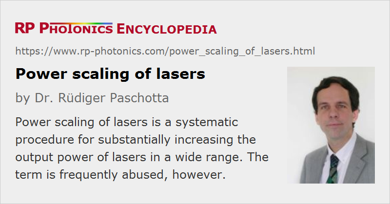

Power Scaling of Lasers
Definition: a procedure for substantially increasing the output power of lasers
Alternative terms: radiance scaling, brightness scaling
German: Leistungsskalierung von Lasern
How to cite the article; suggest additional literature
Author: Dr. Rüdiger Paschotta
To begin with a warning, the term power scaling is often used in a fairly inappropriate manner, meaning nothing more than improving the output power of a laser in some way. The actual meaning of this term should include much more than that [7]: a well-defined systematic scaling procedure which makes it possible to increase substantially and repeatedly the output power without making the main problems more severe, i.e.,
- without spoiling other essential performance parameters, such as the beam quality,
- without relying on arbitrarily improved system components (e.g. pump sources with arbitrarily high brightness), and
- without driving one against a more or less hard wall, e.g. in the form of excessive peak temperatures or temperature gradients, damaging optical intensity levels, or excessive nonlinear effects
For example, it is not power scaling when the output power of a laser is increased in the following ways:
- by arranging multiple emitters in parallel, where the beam quality decreases with increasing number of emitters
- by polarization beam combining (polarization coupling) of two pump diodes or by cryogenic cooling of the gain medium (because such measures cannot be repeated)
- by using a pump diode with a higher radiance
- by design changes which drive a critical component from 40% to 80% of its damage threshold
If the power is increased while the beam quality is preserved (and some other conditions are fulfilled, as discussed below), one can also use the term radiance scaling (or brightness scaling). For many laser applications, increased laser powers are indeed useful only if the radiance is increased as well.
Only for certain power-scalable laser architectures, true power scalability is given. True scalability is associated with a well-defined scaling procedure, which exactly defines e.g. how to double the output power, starting from a given working design. For example, the form of such a scaling procedure could be: in order to double the output power, double the pump power, apply it to twice the mode area in the gain medium, reduce parameter X by half while keeping parameter Y constant; this will double the output power without increasing the detrimental effect Z.
Of course, any power scaling procedure will eventually hit some limits, preventing scaling to arbitrarily large powers. However, power scalability of a system at least provides a large range of powers where progress is relatively easy to achieve.
Methods of Power Scaling
A conceptually simple, although not very attractive example of power scaling would be to tile collimated beams from independently running lasers side by side. In this way, nearly unlimited amounts of output power can be achieved simply by combining the required number of lasers. However, even though the combined power increases in proportion to the number of lasers, the beam quality of the combined output decreases (because the beam area increases while the beam divergence remains constant), and the radiance (brightness) will at most stay at the level of a single laser.
It is therefore easy to see that power scaling methods which conserve the beam quality are highly desirable. For beam combining with multiple lasers [6], the beams need to be superimposed so that a single output beam with similar parameters is obtained. For just two beams, having well-defined polarization states, a simple polarizer (e.g. a polarizing cube) could be sufficient (→ polarization beam combining), but this method cannot be repeated because it leads to an unpolarized beam. For large numbers of combined beams, there are various methods:
- If the beams have different wavelengths, spectral beam combining can be used.
- The outputs of single-frequency lasers can be coherently combined e.g. with ordinary beam splitters, if the relative phase of the beams can be stabilized, and the beams are polarized. Alternatively, beams with a transverse displacement can be combined to form a single beam with larger area but smaller beam divergence, thus also preserving the beam quality. Such methods are currently being explored both with bulk and fiber lasers.
- Coherent beam combining does not always require single-frequency operation; there are certain optical feedback techniques which work with multimode lasers.
(See the article on beam combining for more details.)
Such methods make it possible to scale the output power without degrading the beam quality, but still at the cost of increasing the number of components. Other power scaling methods operate on the design of a single high-power laser. Not every type of laser, however, is suitable for true power scaling. For example, a simple end-pumped or side-pumped rod laser will exhibit increasingly severe thermal effects if the pump power is increased. Modifying the mode area does in this case not help: while a larger pump beam reduces the focusing power of the thermal lens, a larger laser mode is more sensitive to lensing, so that the beam quality and eventually also the power efficiency are compromised.
A good example of a power-scalable laser design is that of a thin-disk laser [1]. Here, power scalability arises from the special geometry with a longitudinal heat flow. Within a large range of output powers, power scaling is possible just by increasing the mode area in the gain medium (the thin disk) in proportion to the pump and output power. If this scaling procedure is applied, the maximum temperature excursion in the disk is not significantly increased, as the cooled area increases in proportion to the power. Moreover, the focusing power of the thermal lens resulting from the transverse temperature gradient is even reduced for models with higher powers; this just compensates for the fact that a larger laser mode is more sensitive to lensing. The output power can therefore be increased until other effects limit the performance – for example, effects related to mechanical stress in the disk, which increases with increased powers, or to amplified spontaneous emission in the transverse direction, which will eventually limit the power achievable from a single disk. Such effects can be substantially mitigated e.g. by using a composite (doped/undoped) disk. It was demonstrated by the author's former research group that even passively mode-locked thin-disk lasers are power scalable over a wide range.
Slab lasers have also been proposed as a power-scalable technology. In a similar fashion as for thin-disk lasers, the cooled area of a laser slab is scaled up for higher powers, so that the temperature rise, temperature gradient and induced stress do not have to be increased for higher powers [4]. However, efficient power extraction with high beam quality is a challenge. Close to diffraction-limited operation will be more and more difficult to achieve as the powers are scaled up.
An intermediate scaling method, also sometimes used, increases the number of laser heads, but uses those in a single laser resonator. The combined effect of beam distortions in the laser heads may be expected to soon spoil the beam quality, but there are so-called periodic resonators [2] where this is not the case. Nevertheless, the number of usable laser heads will normally be fairly limited by practical factors.
Fiber Lasers and Amplifiers: How About Power Scalability?
An interesting question is whether cladding-pumped fiber lasers and amplifiers are power-scalable. A general answer is not possible owing to the multitude of applied techniques and the dependence on the specific requirements, e.g. in terms of output format (continuous-wave, possibly with narrow bandwidth, or pulsed, etc.) and beam quality.
It is not an option for real power scaling to increase the output power while keeping the mode area constant, because this increases the optical intensities. The intensities in existing high-power fiber lasers and amplifiers are already very high – orders of magnitude higher than e.g. in thin-disk lasers, and not that far from the allowable limits. Hence the mode area also needs to be increased. However, the mode area is limited to the order of 1000–3000 μm2 for single-mode cores, and operation with optimized multimode cores does also not allow much larger mode areas as long as close to diffraction-limited operation is required.
Various other factors can also remove the scalability – e.g. launching the pump power into the fiber ends. For a given brightness of the pump diodes, increased power necessitates an increased inner cladding diameter. This reduces the pump absorption per unit length. To compensate for that, it is necessary either also to increase the core diameter (eventually degrading the beam quality) or to increase the fiber length. The latter makes nonlinear effects more severe, which may or may not matter, depending on the circumstances. To some extent, the effective nonlinearity can be reduced by using more highly doped fibers, which can be shorter. However, this is limited not only by possible quenching effects, but also by the allowable thermal load per meter of fiber.
The enormous progress in the performance of high-power diffraction-limited fiber devices, that has been made in recent years, is not itself a proof of power scalability, but rather has to be seen as resulting from a systematic optimization, involving much improved pump diodes and beam shapers, novel techniques for launching pump power into fibers, optimized double-clad fibers with large mode areas, and an improved understanding of how ideally to fit all the design parameters for optimum performance. In contrast to a true power scaling procedure, this progress has relied on constantly improved components and has led to strongly increased optical intensities in fibers, and also to much higher heat loads per meter. Therefore, it has to be expected that the enormous progress in recent years will soon be substantially slowed when particularly the nonlinearities become too strong.
Of course, there is still the option of beam combining the output of several or even many fibers, but at the expense of losing some significant advantages of single-fiber devices.
Concluding Remarks
We have seen that the concept of power scaling in a meaningful sense must be based on a well-defined and repeatable scaling procedure. If such true power scalability is given, the laser performance can be increased within a wide range of output powers without relying on new materials (e.g. with higher damage threshold), arbitrarily improved components (e.g. pump diodes with higher brightness), or additional inventions (e.g. to keep thermal effects under control). However, most laser architectures used so far are not power-scalable in such a sense, at least not beyond the already realized power levels, and when requiring a high beam quality.
It must be emphasized that power scalability of some laser architecture depends strongly on various boundary conditions, such as the requirements in terms of beam quality and output format (pulsed or continuous-wave). For example, high-power fiber lasers and amplifiers are power-scalable in the regime of many kilowatts provided that a high beam quality is not demanded. Also, nonlinear effects can be much more severe for devices which are used in pulsed operation, and can in such cases spoil the scalability.
Power scaling considerations, applied either to whole laser architectures or to isolated aspects, are useful particularly for estimating the potential of some architecture or technique to be applied in power regimes which have not yet been experimentally explored. Some aspects may exhibit benign scaling properties, so that they will not cause significant challenges at high power levels, even if the corresponding effects are not negligible in low or medium power devices. Other aspects or techniques, exhibiting less favorable scaling behavior, may become very detrimental at high power levels, even if their effects are negligible in low- or medium-power devices. A proper analysis of such issues in the context of scalability, based on a detailed qualitative and quantitative understanding of all relevant physical effects (and possibly enriched with modeling capabilities), obviously leads to a predictive power which goes far beyond that of a simple extrapolation of recent technological progress.
Questions and Comments from Users
Here you can submit questions and comments. As far as they get accepted by the author, they will appear above this paragraph together with the author’s answer. The author will decide on acceptance based on certain criteria. Essentially, the issue must be of sufficiently broad interest.
Please do not enter personal data here; we would otherwise delete it soon. (See also our privacy declaration.) If you wish to receive personal feedback or consultancy from the author, please contact him e.g. via e-mail.
By submitting the information, you give your consent to the potential publication of your inputs on our website according to our rules. (If you later retract your consent, we will delete those inputs.) As your inputs are first reviewed by the author, they may be published with some delay.
Bibliography
| [1] | A. Giesen et al., “Scalable concept for diode-pumped high-power solid-state lasers”, Appl. Phys. B 58, 363 (1994), doi:10.1007/BF01081875 |
| [2] | J. M. Eggleston, “Periodic resonator for average-power scaling of stable-resonator solid-state lasers”, IEEE J. Quantum Electron. 24 (9), 1821 (1998), doi:10.1109/3.7121 |
| [3] | K. Contag et al., “Theoretical modelling and experimental investigations of the diode-pumped thin disk Yb:YAG laser”, Quantum Electron. 29 (8), 697 (1999), doi:10.1070/QE1999v029n08ABEH001555 |
| [4] | T. S. Rutherford et al., “Edge-pumped quasi-three-level slab lasers: design and power scaling”, IEEE J. Quantum Electron. 36 (2), 205 (2000), doi:10.1109/3.823467 |
| [5] | R. Paschotta et al., “Diode-pumped passively mode-locked lasers with high average power”, Appl. Phys. B 70, S25 (2000), doi:10.1007/s003400000269 |
| [6] | T. Y. Fan, “Laser beam combining for high-power, high-radiance sources”, J. Sel. Top. Quantum Electron. 11 (3), 567 (2005), doi:10.1109/JSTQE.2005.850241 |
| [7] | R. Paschotta, “Power scalability as a precise concept for the evaluation of laser architectures”, open access paper on arXiv.org, see arXiv:0711.3987v1 |
See also: high-power lasers, thermal lensing, rod lasers, thin-disk lasers, fiber lasers, fiber amplifiers, brightness, The Photonics Spotlight 2006-09-21, The Photonics Spotlight 2007-09-07, The Photonics Spotlight 2007-12-03, The Photonics Spotlight 2009-09-19
and other articles in the categories lasers, methods

This encyclopedia is authored by Dr. Rüdiger Paschotta, the founder and executive of RP Photonics Consulting GmbH. How about a tailored training course from this distinguished expert at your location? Contact RP Photonics to find out how his technical consulting services (e.g. product designs, problem solving, independent evaluations, training) and software could become very valuable for your business!
|  |
If you like this page, please share the link with your friends and colleagues, e.g. via social media:
These sharing buttons are implemented in a privacy-friendly way!